# Load packages
library(tidyverse)
library(here)
# Load data
rna <- read_csv(here("data", "rnaseq.csv"))3 Visualizing data with ggplot2
ggplot2 is a plotting package that makes it simple to create complex plots from data in a data frame. It provides a more programmatic interface for specifying what variables to plot, how they are displayed, and general visual properties. The theoretical foundation that supports the ggplot2 is the Grammar of Graphics. Using this approach, we only need minimal changes if the underlying data change or if we decide to change from a bar plot to a scatterplot. This helps in creating publication quality plots with minimal amounts of adjustments and tweaking.
Let’s start by loading the required packages and data:
3.1 Goals of this lesson
At the end of this lesson, you will be able to:
- create plots with
ggplot2for different kinds of data - customize plots
- arrange plots in complex figures
3.2 Plotting with ggplot2
ggplot2 functions like data in the ‘long’ format, i.e., a column for every dimension, and a row for every observation. Well-structured data will save you lots of time when making figures with ggplot2.
ggplot graphics are built step by step by adding new elements. Adding layers in this fashion allows for extensive flexibility and customization of plots. As stated in RStudio’s Data Visualization Cheat Sheet:
The idea behind the Grammar of Graphics it is that you can build every graph from the same 3 components: (1) a data set, (2) a coordinate system, and (3) geoms — i.e. visual marks that represent data points.
To build a ggplot, we will use the following basic template that can be used for different types of plots:
ggplot(<DATA>, aes(<MAPPINGS>)) +
<GEOM_FUNCTION>()For example:
- 1
-
Use the
ggplot()function and bind the plot to a specific data frame using thedataargument. - 2
-
Define a mapping (using the aesthetic (
aes) function), by selecting the variables to be plotted and specifying how to present them in the graph, e.g. as x/y positions or characteristics such as size, shape, color, etc. - 3
-
Add ‘geoms’ - geometries, or graphical representations of the data in the plot (points, lines, bars).
ggplot2offers many different geoms.
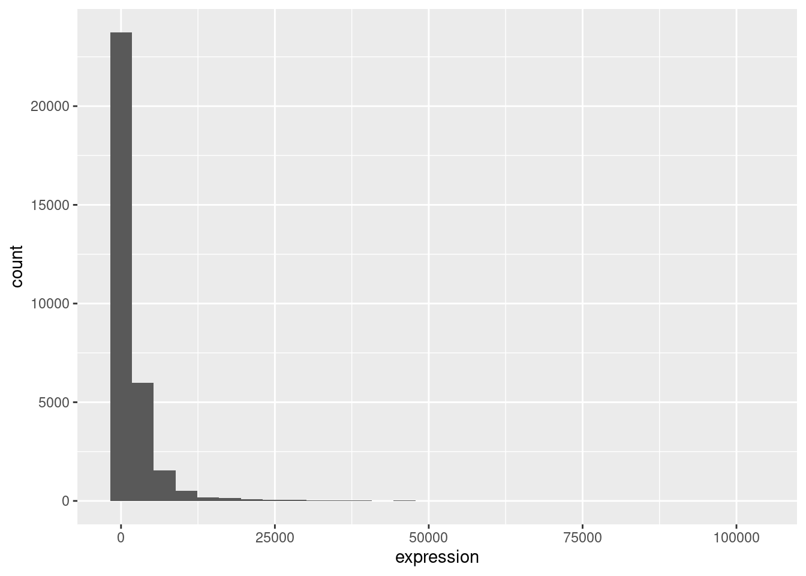
ggplot2 offers many different geometries, such as:
geom_point()for scatter plots, dot plots, etc.geom_histogram()for histogramsgeom_boxplot()for boxplotsgeom_line()for trend lines, time series, etc- and much more!
Besides, several people have extended the ggplot2 ecosystem by creating new packages with geoms that are field-specific (e.g., geom_nodes() from the package ggnetwork to plot networks).
Practice
You have probably noticed an automatic message that appears when drawing the histogram:
Change the arguments bins or binwidth of geom_histogram() to change the number or width of the bins.
We can observe here that the data are skewed to the right. We can apply log2 transformation to have a more symmetric distribution. Note that we add here a small constant value (+1) to avoid having -Inf values returned for expression values equal to 0.
rna <- rna %>%
mutate(expression_log = log2(expression + 1))If we now draw the histogram of the log2-transformed expressions, the distribution is indeed closer to a normal distribution.
ggplot(rna, aes(x = expression_log)) +
geom_histogram()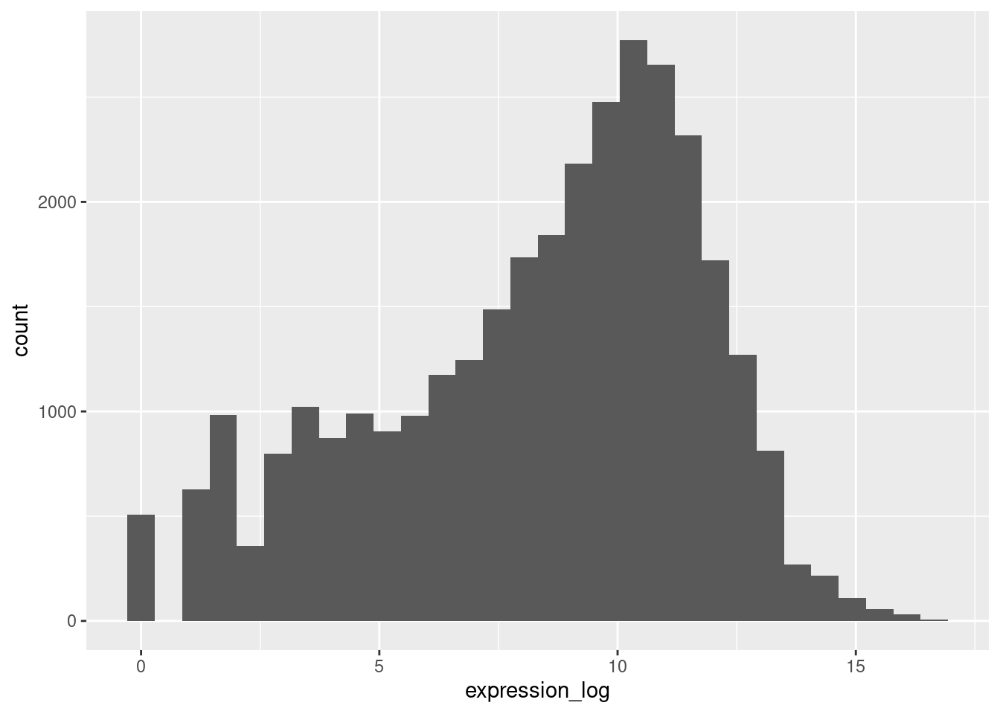
From now on we will work on the log-transformed expression values.
3.3 Building your plots iteratively
We will now draw a scatter plot with two continuous variables and the geom_point() function. This graph will represent the log2 fold changes of expression comparing time 8 versus time 0, and time 4 versus time 0. To this end, we first need to compute the means of the log-transformed expression values by gene and time, then the log fold changes by subtracting the mean log expressions between time 8 and time 0 and between time 4 and time 0. Note that we also include here the gene biotype that we will use later on to represent the genes. We will save the fold changes in a new data frame called rna_fc.
rna_fc <- rna |>
select(gene, time, gene_biotype, expression_log) |>
group_by(gene, time, gene_biotype) |>
summarise(mean_exp = mean(expression_log)) |>
pivot_wider(names_from = time, values_from = mean_exp) |>
mutate(time_8_vs_0 = `8` - `0`, time_4_vs_0 = `4` - `0`)
head(rna_fc)# A tibble: 6 × 7
# Groups: gene [6]
gene gene_biotype `0` `4` `8` time_8_vs_0 time_4_vs_0
<chr> <chr> <dbl> <dbl> <dbl> <dbl> <dbl>
1 AI504432 lncRNA 10.0 10.1 9.97 -0.0357 0.0754
2 AW046200 lncRNA 7.28 7.23 6.35 -0.930 -0.0497
3 AW551984 protein_coding 7.86 7.26 8.19 0.334 -0.596
4 Aamp protein_coding 12.2 12.2 12.2 0.0391 0.0754
5 Abca12 protein_coding 2.51 2.34 2.33 -0.180 -0.173
6 Abcc8 protein_coding 11.3 11.3 11.2 -0.164 0.0234We can then build a ggplot with the newly created dataset rna_fc. Building plots with ggplot2 is typically an iterative process. We start by defining the dataset we’ll use, lay out the axes, and choose a geom:
ggplot(rna_fc, aes(x = time_4_vs_0, y = time_8_vs_0)) +
geom_point()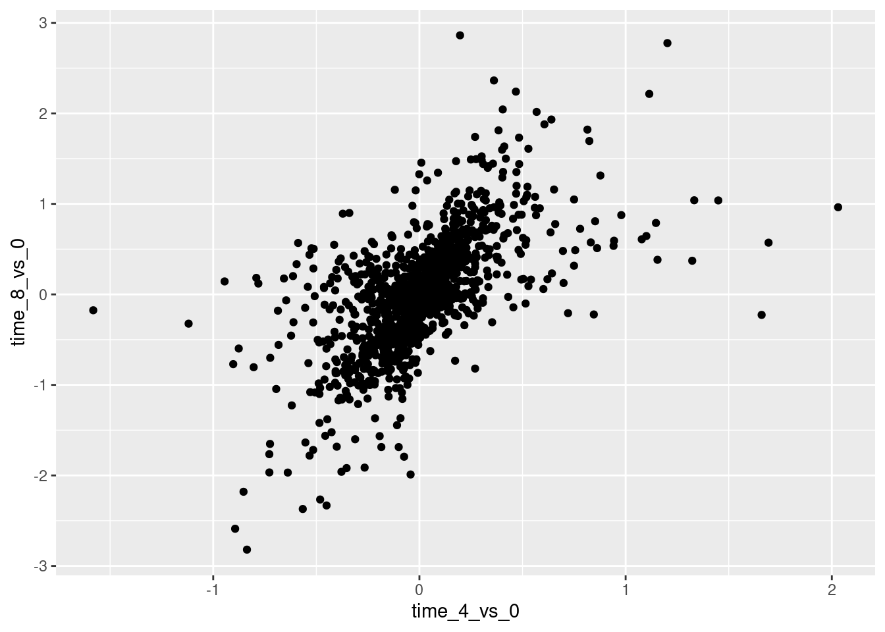
Then, we start modifying this plot to extract more information from it. For instance, we can add transparency (alpha) to avoid overplotting:
ggplot(rna_fc, aes(x = time_4_vs_0, y = time_8_vs_0)) +
geom_point(alpha = 0.3)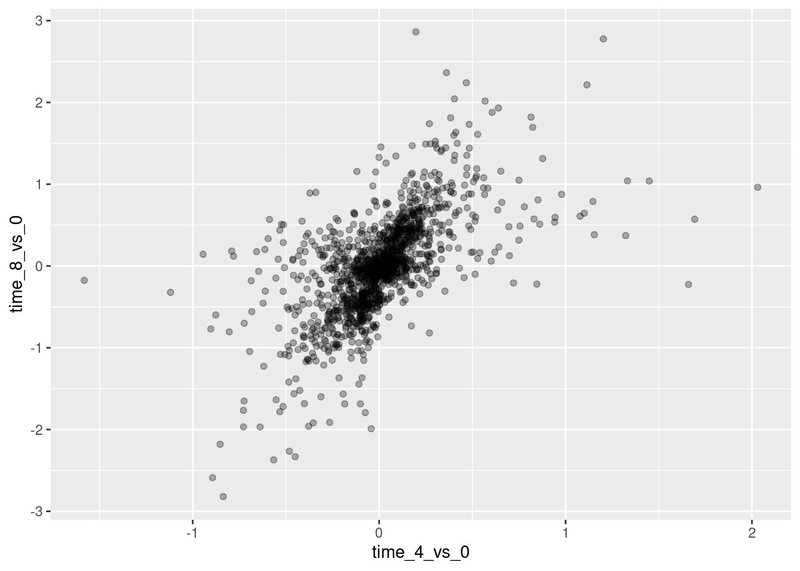
We can also add colors for all the points:
ggplot(rna_fc, aes(x = time_4_vs_0, y = time_8_vs_0)) +
geom_point(alpha = 0.3, color = "blue")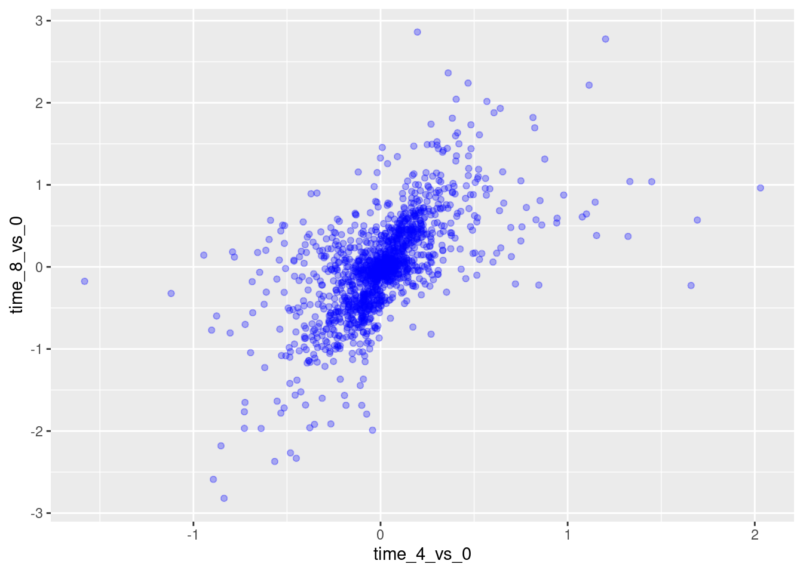
Or to color each gene in the plot differently, you could use a vector as an input to the argument color. ggplot2 will provide a different color corresponding to different values in the vector. Here is an example where we color with gene_biotype:
ggplot(rna_fc, aes(x = time_4_vs_0, y = time_8_vs_0)) +
geom_point(alpha = 0.3, aes(color = gene_biotype))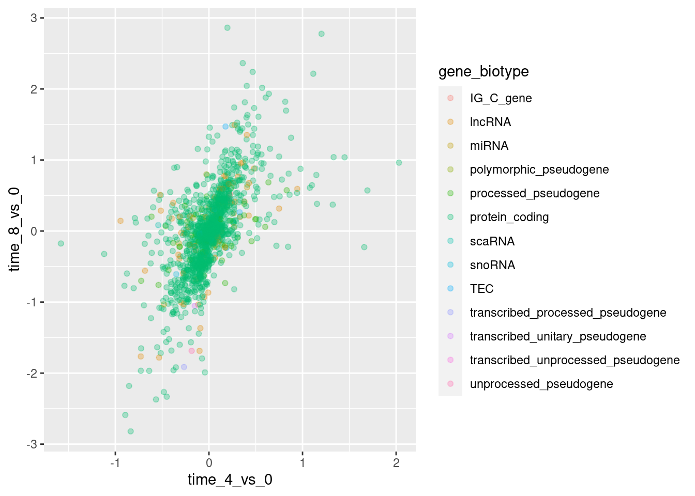
We can also specify the colors directly inside the mapping provided in the ggplot() function. This will be seen by any geom layers and the mapping will be determined by the x- and y-axis set up in aes().
ggplot(rna_fc, aes(x = time_4_vs_0, y = time_8_vs_0, color = gene_biotype)) +
geom_point(alpha = 0.3)
Finally, we could also add a diagonal line with the geom_abline() function:
ggplot(rna_fc, aes(x = time_4_vs_0, y = time_8_vs_0, color = gene_biotype)) +
geom_point(alpha = 0.3) +
geom_abline(intercept = 0)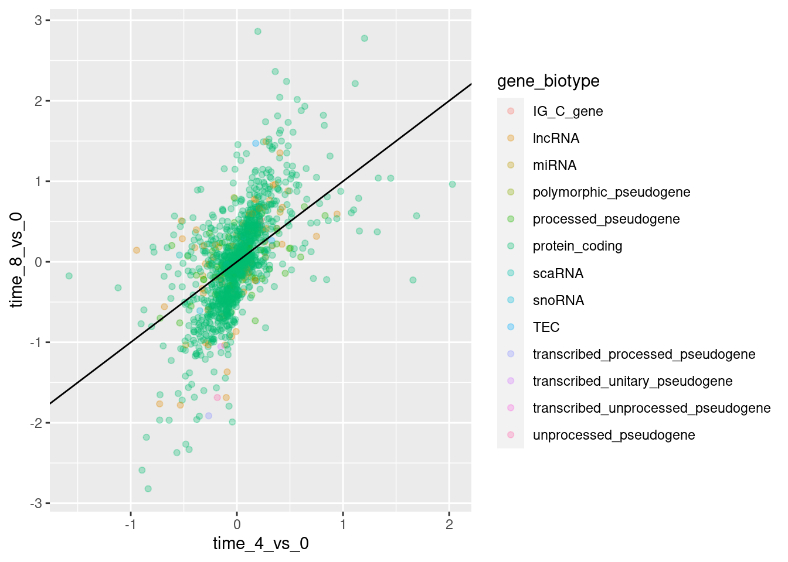
Notice that we can change the geom layer from geom_point to geom_jitter and colors will still be determined by gene_biotype.
ggplot(rna_fc, aes(x = time_4_vs_0, y = time_8_vs_0, color = gene_biotype)) +
geom_jitter(alpha = 0.3) +
geom_abline(intercept = 0)
Practice
Use what you just learned to create a scatter plot of expression_log over sample from the rna dataset with the time showing in different colors. Is this a good way to show this type of data?
3.4 Visualizing distributions
We can use boxplots to visualize the distribution of gene expressions within each sample:
ggplot(rna, aes(y = expression_log, x = sample)) +
geom_boxplot()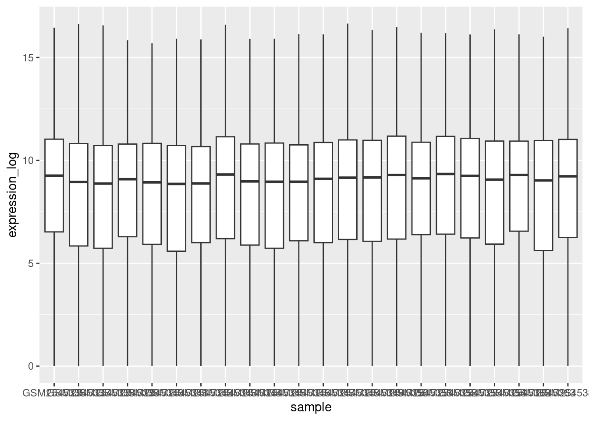
By adding points to the boxplot, we can have a better idea of the number of measurements and of their distribution:
ggplot(rna, aes(y = expression_log, x = sample)) +
geom_jitter(alpha = 0.2, color = "tomato") +
geom_boxplot(alpha = 0)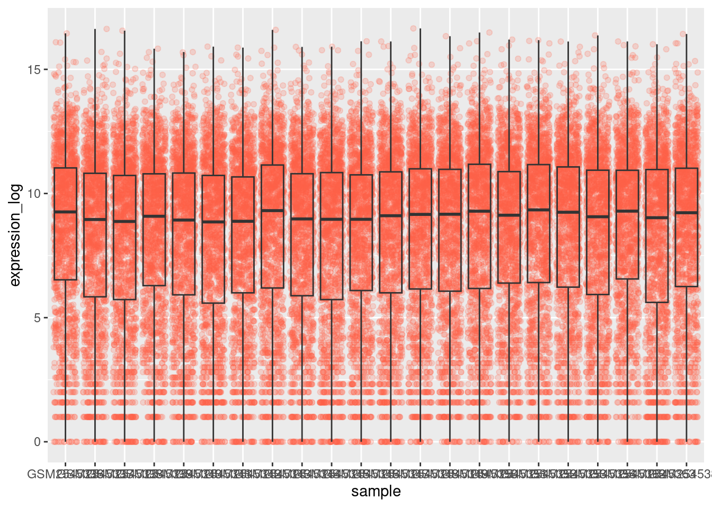
Practice
Note how the boxplot layer is in front of the jitter layer? What do you need to change in the code to put the boxplot behind the points?
You may notice that the values on the x-axis are still not properly readable. Let’s change the orientation of the labels and adjust them vertically and horizontally so they don’t overlap. You can use a 90-degree angle, or experiment to find the appropriate angle for diagonally oriented labels:
ggplot(rna, aes(y = expression_log, x = sample)) +
geom_jitter(alpha = 0.2, color = "tomato") +
geom_boxplot(alpha = 0) +
theme(axis.text.x = element_text(angle = 90, hjust = 0.5, vjust = 0.5))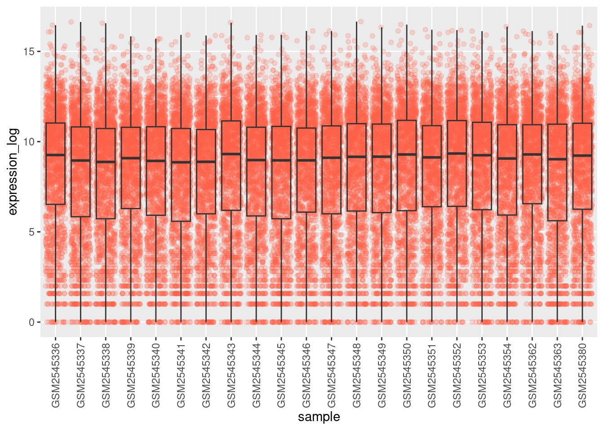
Practice
Add color to the data points on your boxplot according to the duration of the infection (
time). Hint: Check the class fortime. Consider changing the class oftimefrom integer to factor directly in the ggplot mapping. Why does this change how R makes the graph?Boxplots are useful summaries, but hide the shape of the distribution. For example, if the distribution is bimodal, we would not see it in a boxplot. An alternative to the boxplot is the violin plot, where the shape (of the density of points) is drawn.
Replace the box plot with a violin plot; see geom_violin(). Fill in the violins according to the time with the argument fill.
3.5 Line plots
Line plots are an excellent way of visualizing time-series data. Here, we will calculate the mean expression per duration of the infection for the 10 genes having the highest log fold changes comparing time 8 versus time 0. First, we need to select the genes and create a subset of rna called sub_rna containing the 10 selected genes. Then, we need to group the data and calculate the mean gene expression within each group:
# Get genes with highest fold changes comparing time points 8 to 0
genes_selected <- rna_fc |>
arrange(-time_8_vs_0) |>
head(n = 10) |>
pull(gene)
# Get mean expression by time
mean_exp_by_time <- rna |>
filter(gene %in% genes_selected) |>
group_by(gene, time) |>
summarise(mean_exp = mean(expression_log))
mean_exp_by_time# A tibble: 30 × 3
# Groups: gene [10]
gene time mean_exp
<chr> <dbl> <dbl>
1 Acr 0 5.07
2 Acr 4 5.54
3 Acr 8 7.31
4 Aipl1 0 3.70
5 Aipl1 4 3.89
6 Aipl1 8 6.56
7 Bst1 0 3.20
8 Bst1 4 3.77
9 Bst1 8 5.22
10 Chil3 0 4.00
# ℹ 20 more rowsWe can build the line plot with duration of the infection on the x-axis and the mean expression on the y-axis:
ggplot(mean_exp_by_time, aes(x = time, y = mean_exp)) +
geom_line()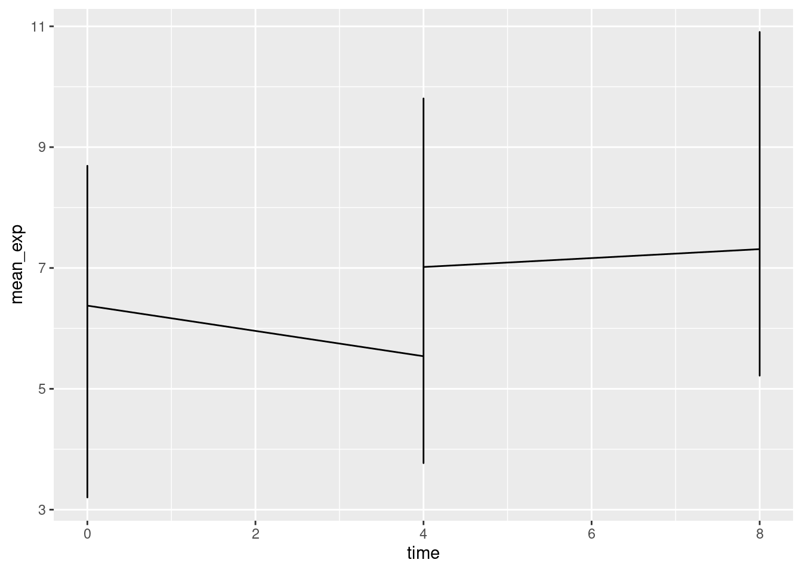
Unfortunately, this does not work because we plotted data for all the genes together. We need to tell ggplot to draw a line for each gene by modifying the aesthetic function to include group = gene:
ggplot(mean_exp_by_time, aes(x = time, y = mean_exp, group = gene)) +
geom_line()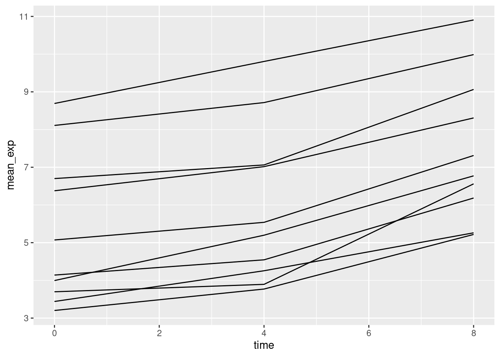
We will be able to distinguish genes in the plot if we add colors (using color also automatically groups the data):
ggplot(mean_exp_by_time, aes(x = time, y = mean_exp, color = gene)) +
geom_line()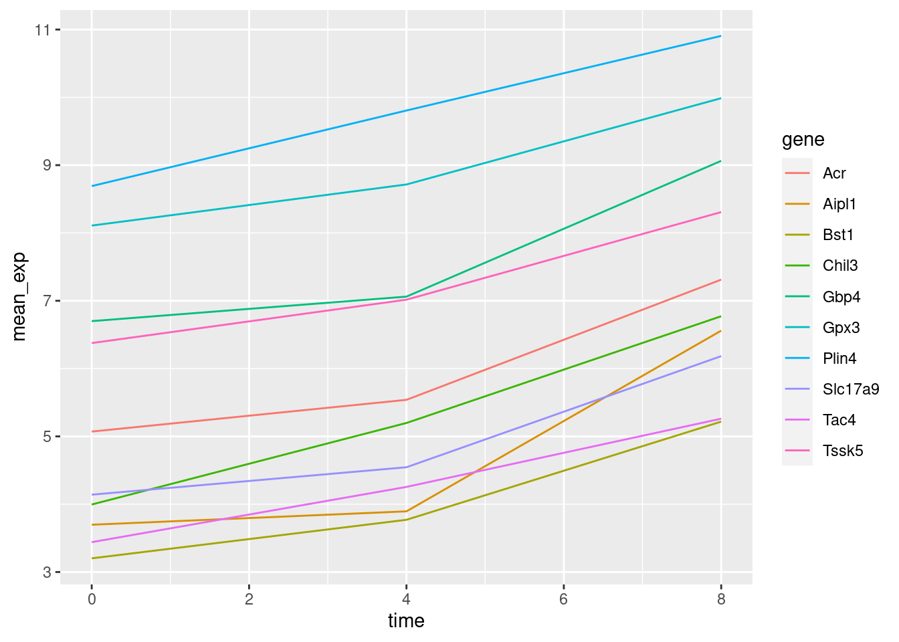
3.6 Faceting
ggplot2 has a special technique called faceting that allows the user to split one plot into multiple (sub) plots based on a factor included in the dataset. These different subplots inherit the same properties (axes limits, ticks, …) to facilitate their direct comparison. We will use it to make a line plot across time for each gene:
ggplot(mean_exp_by_time, aes(x = time, y = mean_exp)) +
geom_line() +
facet_wrap(~gene)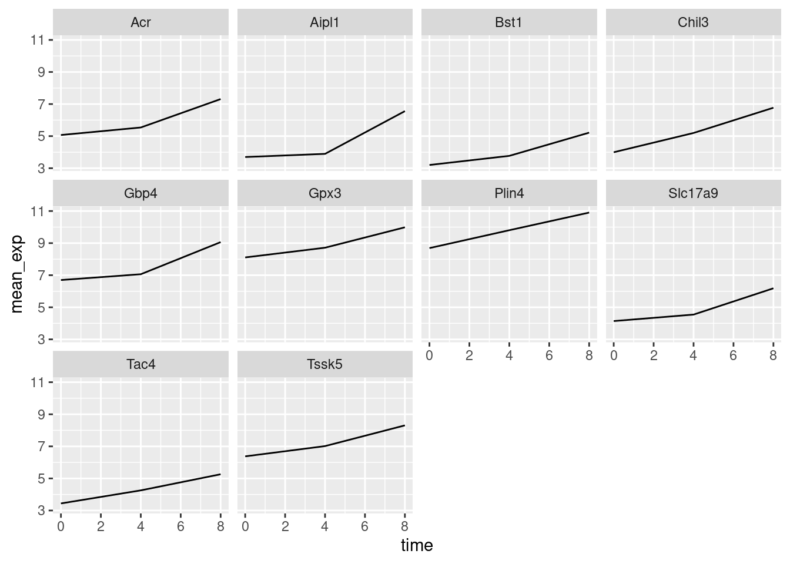
Here both x- and y-axis have the same scale for all the subplots. You can change this default behavior by modifying scales in order to allow a free scale for the y-axis:
ggplot(mean_exp_by_time, aes(x = time, y = mean_exp)) +
geom_line() +
facet_wrap(~gene, scales = "free_y")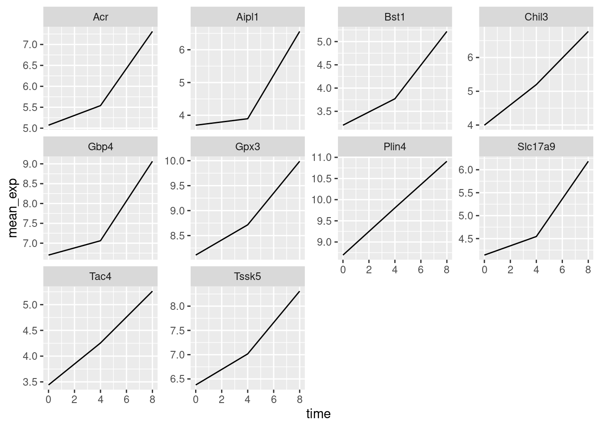
Now, we would like to split the line in each plot by the sex of the mice. To do that, we need to calculate the mean expression in the data frame grouped by gene, time, and sex:
mean_exp_by_time_sex <- rna |>
filter(gene %in% genes_selected) |>
group_by(gene, time, sex) |>
summarise(mean_exp = mean(expression_log))
mean_exp_by_time_sex# A tibble: 60 × 4
# Groups: gene, time [30]
gene time sex mean_exp
<chr> <dbl> <chr> <dbl>
1 Acr 0 Female 5.13
2 Acr 0 Male 5.00
3 Acr 4 Female 5.93
4 Acr 4 Male 5.15
5 Acr 8 Female 7.27
6 Acr 8 Male 7.36
7 Aipl1 0 Female 3.67
8 Aipl1 0 Male 3.73
9 Aipl1 4 Female 4.07
10 Aipl1 4 Male 3.72
# ℹ 50 more rowsWe can now make the faceted plot by splitting further by sex using color (within a single plot):
ggplot(mean_exp_by_time_sex, aes(x = time, y = mean_exp, color = sex)) +
geom_line() +
facet_wrap(~gene, scales = "free_y")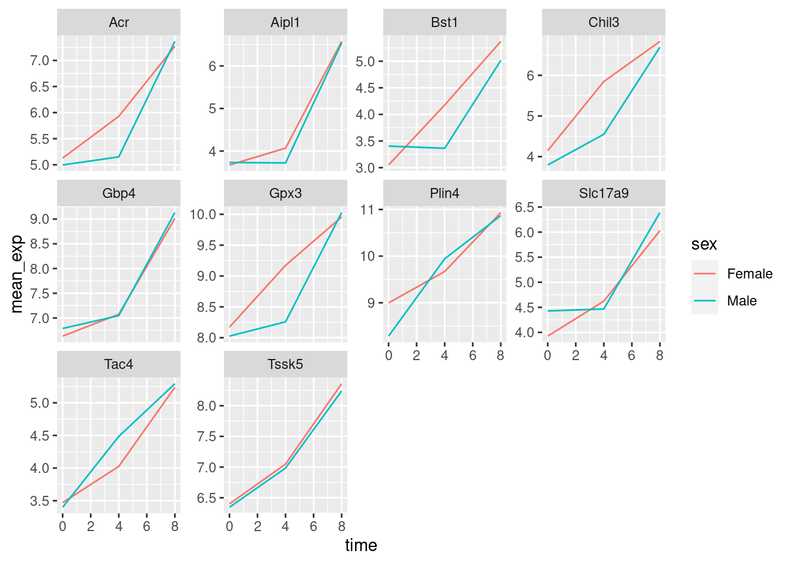
Usually, plots with white background look more readable when printed. We can set the background to white using the function theme_bw(). Additionally, we can remove the grid:
ggplot(mean_exp_by_time_sex, aes(x = time, y = mean_exp, color = sex)) +
geom_line() +
facet_wrap(~gene, scales = "free_y") +
theme_bw() +
theme(panel.grid = element_blank())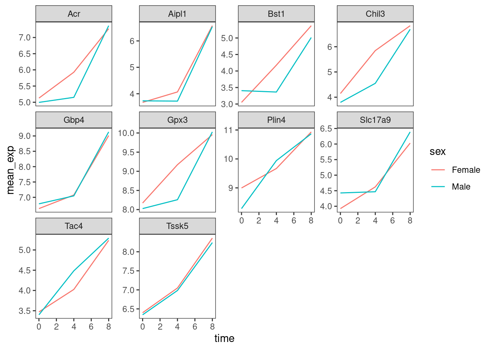
Practice
Use what you just learned to create a plot that depicts how the average expression of each chromosome changes through the duration of infection.
The facet_wrap geometry extracts plots into an arbitrary number of dimensions to allow them to cleanly fit on one page. On the other hand, the facet_grid geometry allows you to explicitly specify how you want your plots to be arranged via formula notation (rows ~ columns; a . can be used as a placeholder that indicates only one row or column).
Let’s modify the previous plot to compare how the mean gene expression of males and females has changed through time:
# Create plot
p <- ggplot(mean_exp_by_time_sex, aes(x = time, y = mean_exp, color = gene)) +
geom_line()
# One column, facet by rows
p + facet_grid(sex ~ .)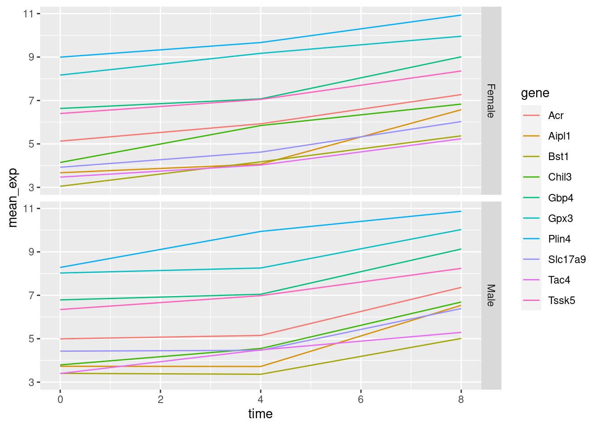
# One row, facet by column
p + facet_grid(. ~ sex)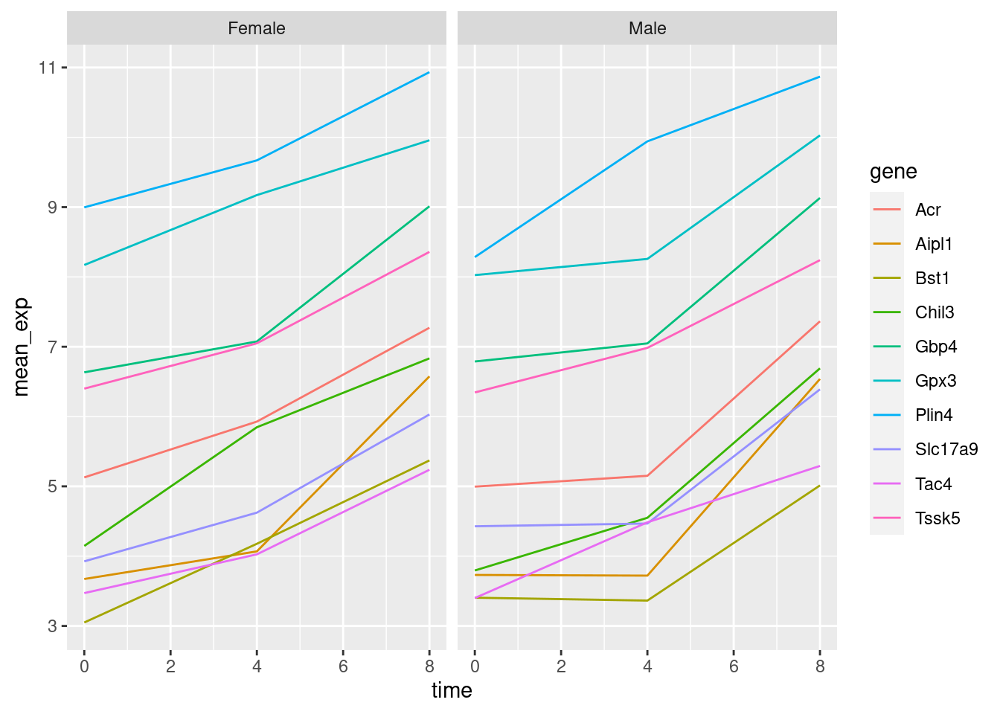
Friendly tip:
ggplot2 themes
In addition to theme_bw(), which changes the plot background to white, ggplot2 comes with several other themes which can be useful to quickly change the look of your visualization. The complete list of themes is available at https://ggplot2.tidyverse.org/reference/ggtheme.html. theme_minimal() and theme_light() are popular, and theme_void() can be useful as a starting point to create a new hand-crafted theme.
The ggthemes package provides a wide variety of options (including an Excel 2003 theme). The ggplot2 extensions website provides a list of packages that extend the capabilities of ggplot2, including additional themes.
3.7 Customisation
Let’s come back to the faceted plot of mean expression by time and gene, colored by sex.
Take a look at the ggplot2 cheat sheet, and think of ways you could improve the plot.
Now, we can change names of axes to something more informative than ‘time’ and ‘mean_exp’, and add a title to the figure:
ggplot(mean_exp_by_time_sex, aes(x = time, y = mean_exp, color = sex)) +
geom_line() +
facet_wrap(~gene, scales = "free_y") +
theme_bw() +
theme(panel.grid = element_blank()) +
labs(
title = "Mean gene expression by duration of the infection",
x = "Duration of the infection (in days)",
y = "Mean gene expression"
)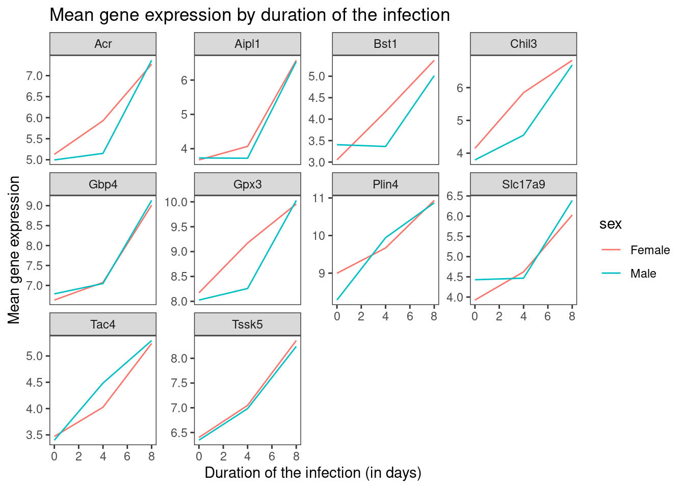
The axes have more informative names, but their readability can be improved by increasing the font size:
ggplot(mean_exp_by_time_sex, aes(x = time, y = mean_exp, color = sex)) +
geom_line() +
facet_wrap(~gene, scales = "free_y") +
theme_bw() +
theme(panel.grid = element_blank()) +
labs(
title = "Mean gene expression by duration of the infection",
x = "Duration of the infection (in days)",
y = "Mean gene expression"
) +
theme(text = element_text(size = 16))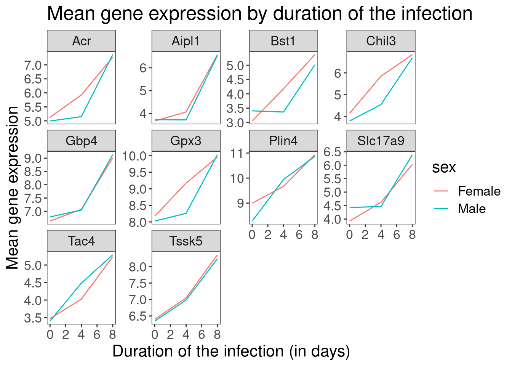
3.8 Composing plots
Faceting is a great tool for splitting one plot into multiple subplots, but sometimes you may want to produce a single figure that contains multiple independent plots, i.e. plots that are based on different variables or even different data frames.
Let’s start by creating the two plots that we want to arrange next to each other:
The first graph counts the number of unique genes per chromosome. We first need to reorder the levels of chromosome_name and filter the unique genes per chromosome. We also change the scale of the y-axis to a log10 scale for better readability.
p_genecount <- rna |>
mutate(
chromosome_name = factor(chromosome_name, levels = c(1:19, "X", "Y"))
) |>
select(chromosome_name, gene) |>
distinct() |>
ggplot() +
geom_bar(
aes(x = chromosome_name), fill = "seagreen",
position = "dodge", stat = "count"
) +
labs(y = "log10(n genes)", x = "chromosome") +
scale_y_log10()
p_genecount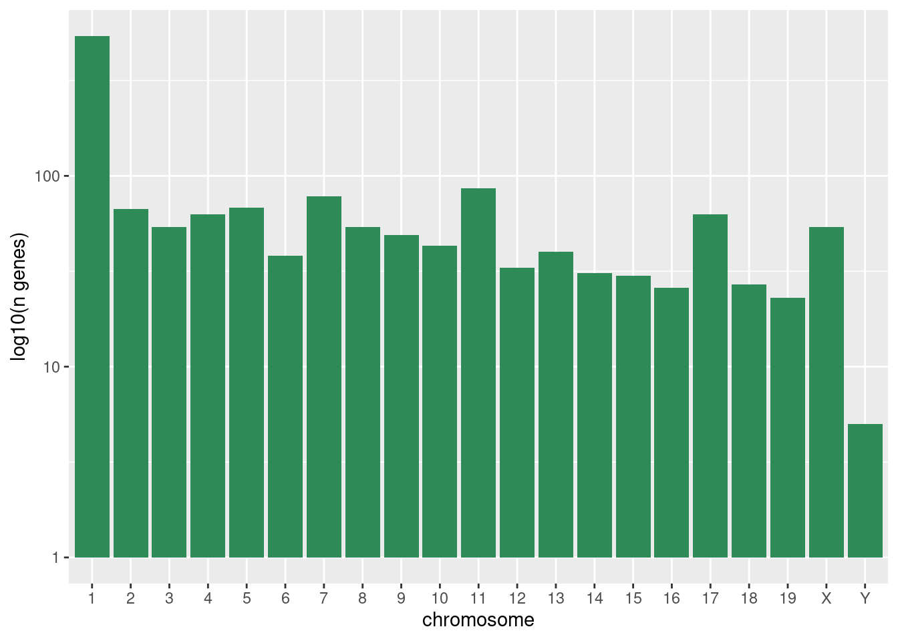
Below, we also remove the legend altogether by setting the legend.position to "none".
p_box <- ggplot(rna, aes(y = expression_log, x = as.factor(time), color = sex)) +
geom_boxplot(alpha = 0) +
labs(y = "Mean gene exp", x = "time") +
theme(legend.position = "none")
p_box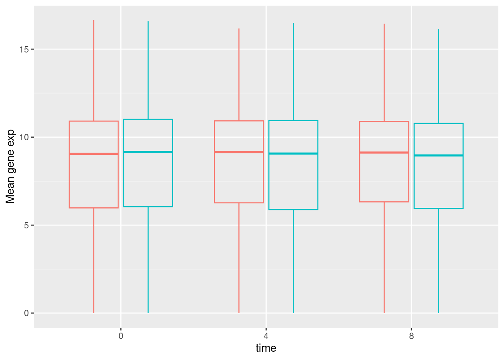
The patchwork package provides an elegant approach to combining figures using the + to arrange figures (typically side by side). More specifically the | explicitly arranges them side by side and / stacks them on top of each other.
library("patchwork")
p_genecount + p_box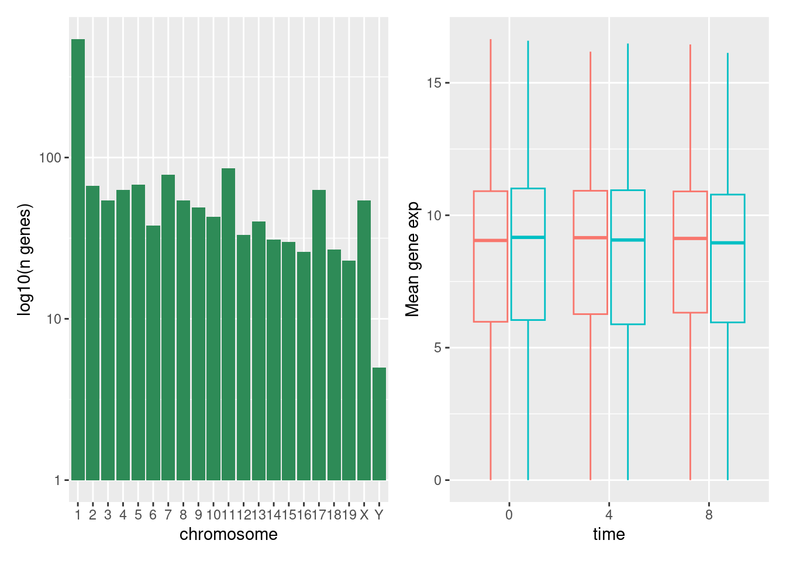
p_genecount / p_box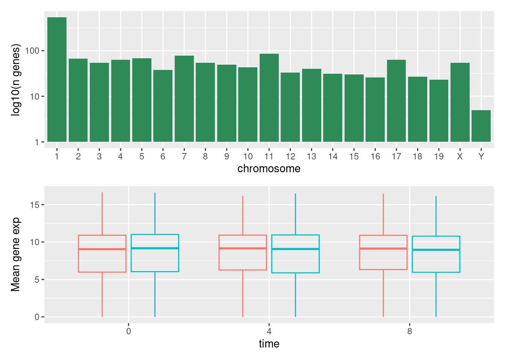
We can combine further control the layout of the final composition with plot_layout to create more complex layouts:
p_genecount + p_box + plot_layout(ncol = 1)
p_genecount +
(p_genecount + p_box) +
p_box +
plot_layout(ncol = 1)
p_genecount /
(p_genecount + p_box) /
p_box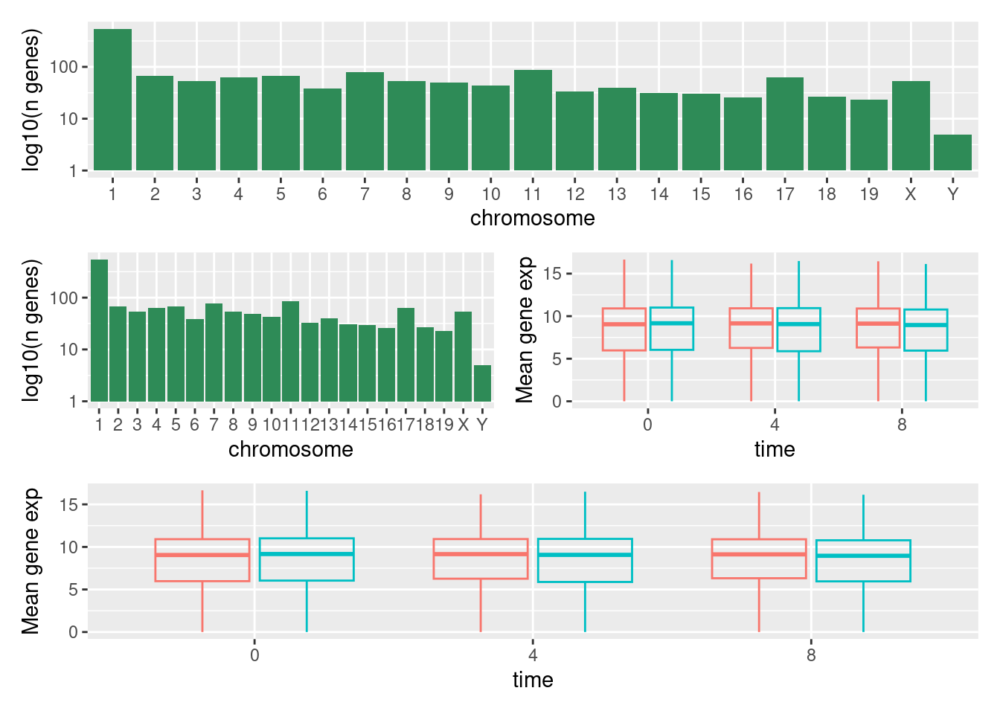
Learn more about patchwork on its webpage.
3.9 Exporting plots
After creating your plot, you can save it to a file in your favorite format. The Export tab in the Plot pane in RStudio will save your plots at low resolution, which will not be accepted by many journals and will not scale well for posters.
Instead, use the ggsave() function, which allows you easily change the dimension and resolution of your plot by adjusting the appropriate arguments (width, height and dpi).
my_plot <- ggplot(mean_exp_by_time_sex, aes(x = time, y = mean_exp, color = sex)) +
geom_line() +
facet_wrap(~gene, scales = "free_y") +
labs(
title = "Mean gene expression by duration of the infection",
x = "Duration of the infection (in days)",
y = "Mean gene expression"
) +
guides(color = guide_legend(title = "Gender")) +
theme_bw() +
theme(
axis.text.x = element_text(colour = "royalblue4", size = 12),
axis.text.y = element_text(colour = "royalblue4", size = 12),
text = element_text(size = 16),
legend.position = "top"
)
ggsave(
my_plot,
file = here("output", "figs", "mean_exp_by_time_sex.png"),
width = 15, height = 10, dpi = 300
)